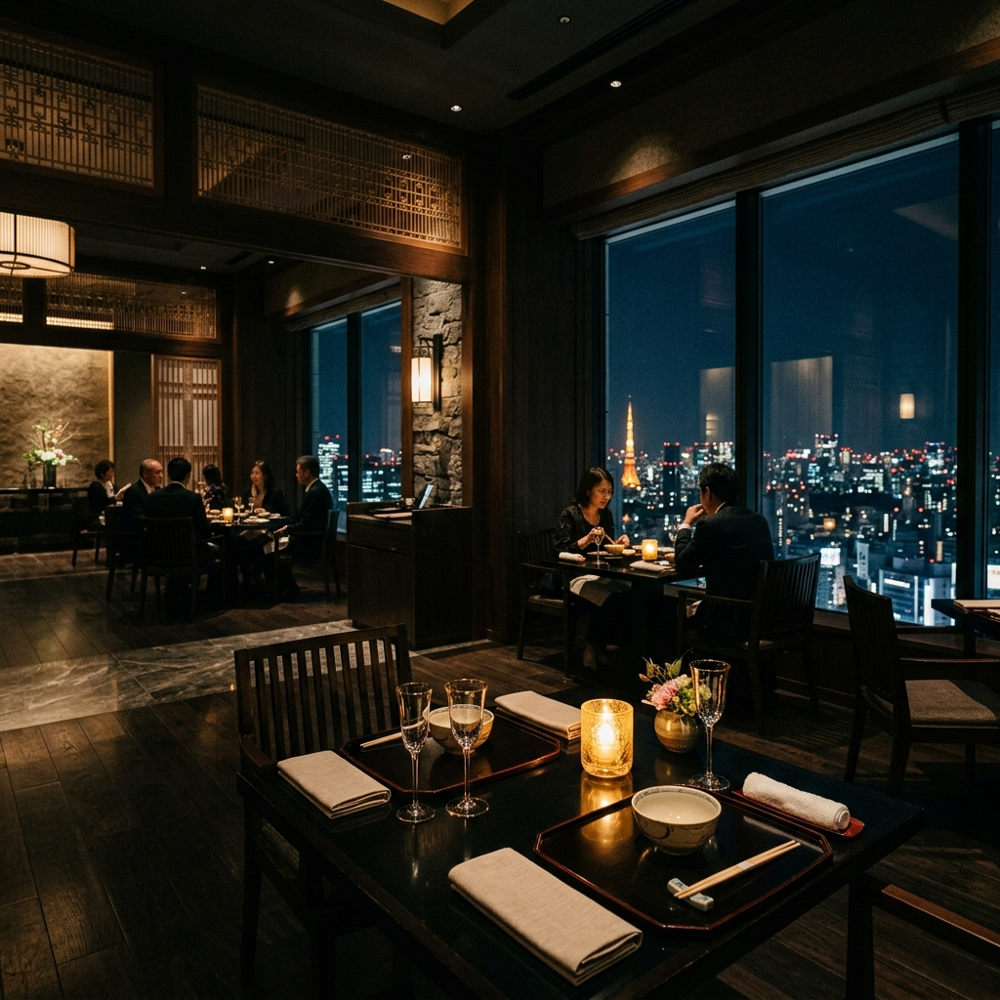
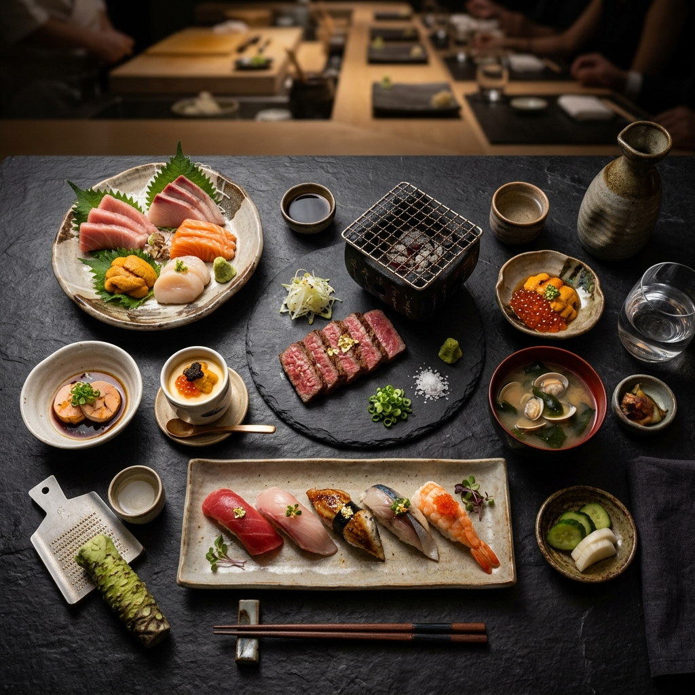
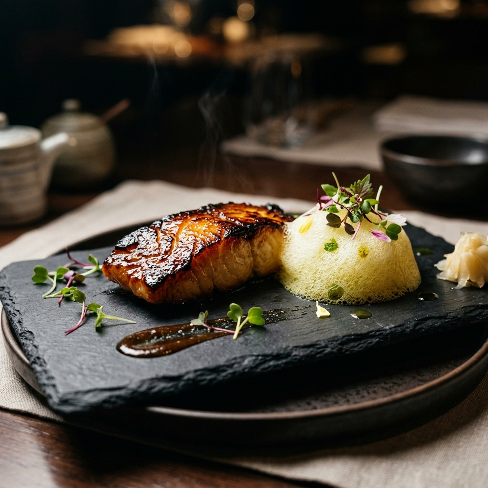
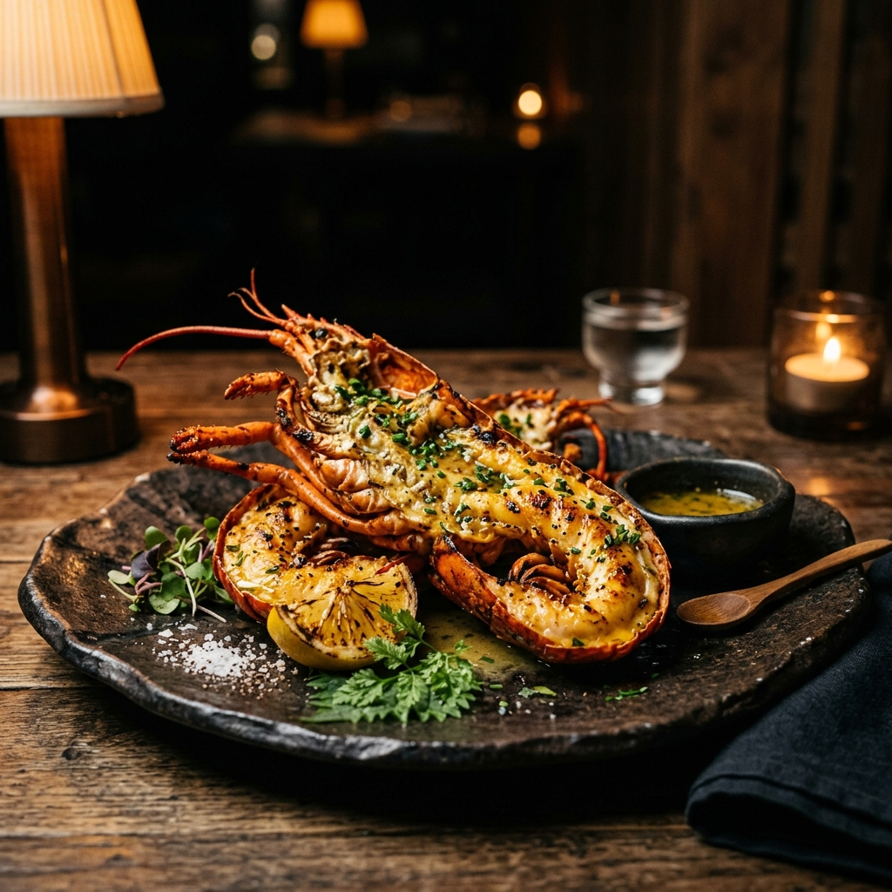
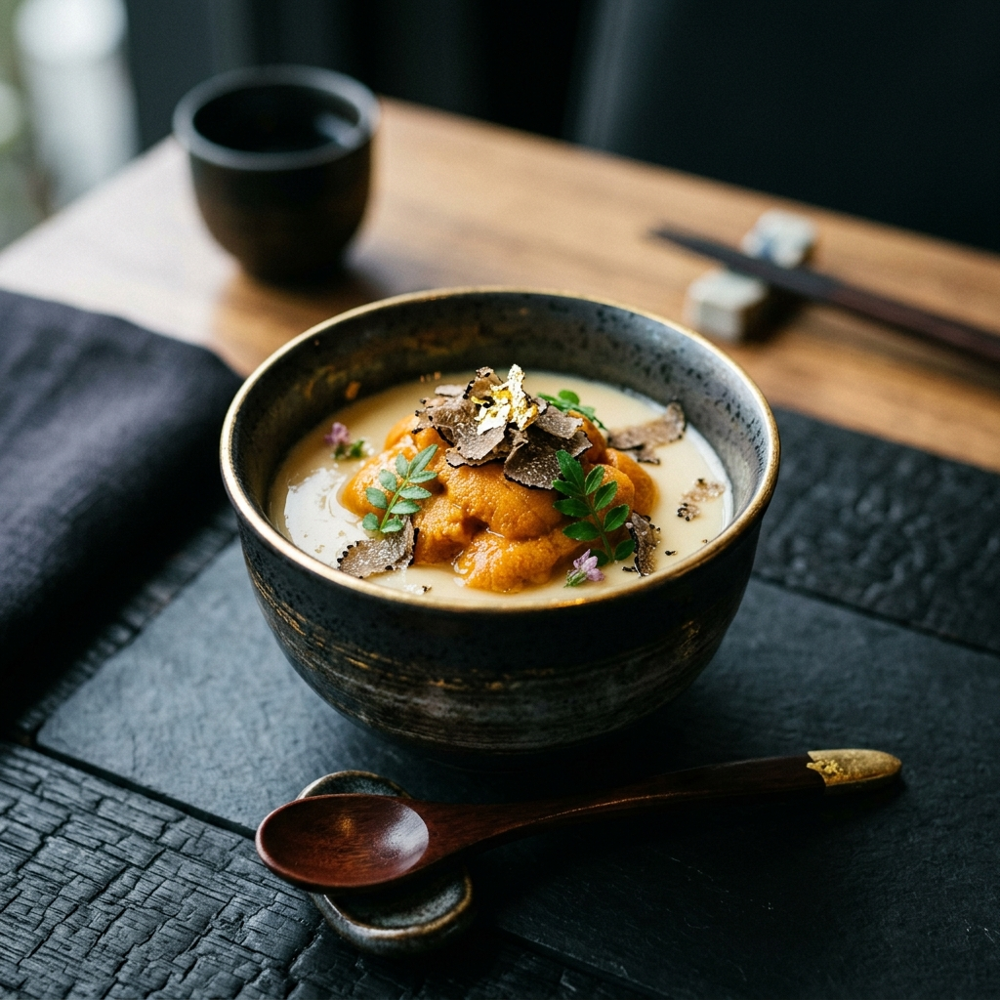

Hikari Fine Dining
Chào mừng bạn đến với Hikari
Trong tiếng Nhật, Hikari là ánh sáng – là sự khởi đầu của mọi sự sống và là lăng kính tôn vinh vẻ đẹp thuần khiết nhất của vạn vật. Tại đây, chúng tôi không chỉ phục vụ món ăn; chúng tôi mời bạn bước vào một hành trình nơi vị giác được đánh thức bởi những tia sáng của sự tận tâm và tinh hoa ẩm thực Phù Tang.

Triết lý và Giá trị cốt lõi
NGUYÊN BẢN
(ORIGINALITY)
Tôn trọng Bản sắc. Chúng tôi gìn giữ trọn vẹn hương vị gốc của nguyên liệu mùa vụ. Mỗi món ăn là một bản giao hưởng thuần khiết, không gia vị cầu kỳ, để thực khách chạm vào tinh hoa của đất trời và biển cả.
NGHỆ NHÂN
(TAKUMI)
Tuyệt tác Kỹ nghệ. Tại Hikari, mỗi lát cắt là một lời cam kết về sự chính xác. Đội ngũ đầu bếp đành cả đời để rèn luyện kỹ thuật thủ công bậc thầy, biến những nguyên liệu thượng hạng thành những tác phẩm nghệ thuật cự giác đầy rung cảm.
TẬN TÂM
(OMOTENASHI)
Phụng sự từ Tâm. Đón tiếp thực khách bằng cả trái tim và sự thấu cảm tinh tế. Chúng tôi không chỉ phục vụ một bữa ăn, mà kiến tạo một không gian ấm áp nơi mọi nhu cầu của thực khách đều được trân trọng và đáp ứng trước khi kịp thành lời.



